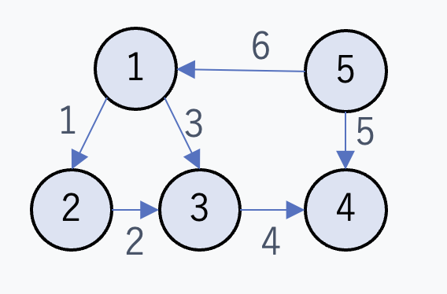

グラフの表現方法を復習する
2025年7月4日
概要
僕はずっと名前のイメージから勝手に接続行列=隣接行列だと思っていたのですが(そうだとしているものも見受けられますが) どうやら一般的にはIncidence Matrixなるものを接続行列と呼ぶことが多いようですね。 英語の表現を日本語に直した時に名前がよくわからん感じの名前になってしまうことはよくあることだと思うので 名前に混乱させられることは受け入れなければいけないとは思うのですがどうも試験なんかがあるならしっかり区別しないといけない と思い基礎的なところからしっかり復習していきたいです。
隣接リストの集合による表現 vs 隣接行列表現
この二つが標準的なグラフの表現方法ということのようです。隣接リストは 各頂点に対して隣接する頂点のリストを持つというもので、 隣接行列は頂点の数をnとしたきn\(\times\)nの行列で、行i列jの要素が1ならば 頂点iと頂点jが隣接していることを表すものです。 隣接リスト表現はグラフが疎である=\(|E| \ll |V|^2\)という時には メモリ効率が良いため重宝されるもののある辺がグラフに属するかという問い合わせをするのに 最悪O(|V|)の時間がかかるという欠点があり、隣接行列表現はメモリが O(|V|^2)と大きくなるものの、グラフが小さい時や特に重み付きでない時などは 行列要素をそれぞれ1bitで表せるのでその単純さから採用されるケースも多いよう。
接続行列
これが問題の用語です。てっきり隣接行列表現と同じものだと思っていたのですが、 アルゴリズムイントロダクションにて以下のような問題があったので。接続行列という日本語がしっくりこないので Incidence行列と以下では呼びます。そうしているサイトや本も多い気もするので。
問題:
自己ループを含まない有向グラフ\(G=(V, E)\)の接続行列(Incidence Matrix)は、
とりあえず具体的なグラフを考えた方がわかりやすそうなので以下のようなテキトーなグラフを例に考えてみます。
このグラフのIncidence行列は以下のようになります。
列を見ればどの辺がどこから出てどこに入るかが一目瞭然なのがこの行列の特徴でしょうか。列に番号をつけて管理する 表現方法は珍しいです。
さて\( BB^T \)を計算するわけですが(5行6列だなんでデカくなるグラフを例にしてしまったことの後悔は置いておいて) \(BB^T\)は\(|V|\times |V|\)型になるので各行列要素はノードについての情報が載っていると嬉しいなあと思いながら 計算していきます。
この結果を解釈していきたいわけですが、対角成分とそのほかで場合分けしたくなります。 対角成分にはそれぞれのノードについての\(B\)の行ベクトルのノルムが入っています。 このノルムは計算の過程を考えれば、このノードに辺が入ってきている時は\(-1 \times -1 = 1\)、 出ていく時は\(1 \times 1 = 1\)により1が足されていく、つまり そのノードに出入りする辺の総数がカウントされていくような計算がなされるので、 対角成分には出入りする辺の本数が入っていることがわかります。
続いて対角成分以外の\(ij\)成分についてですが、ここには ノード\(i\)とノード\(j\)それぞれの\(B\)の行ベクトルの内積が収納されています。 これも内積計算の計算過程をちょっと想像してみると、ある辺が両方のノードに接続していないと どちらかの成分は0になってしまうので、情報として生き残るのはノード\(i, j\)両方に接続している辺が存在する場合のみであり、 ノード\(i, j\)がある辺により接続されているなら\(B_{ij} = B_{ji} = -1\)となります。
つまり\(BB^T\)を計算すると出入りの本数のカウントや接続情報自体を簡単に得ることはできますが 辺の方向などの情報は失われるわけですね。元の\(B\)を参照すればいいわけではありますが。 このような接続行列表現は線形代数的な扱いがしやすいというのと、辺の追加や削除にも 一定強いという点で優れものなようです。